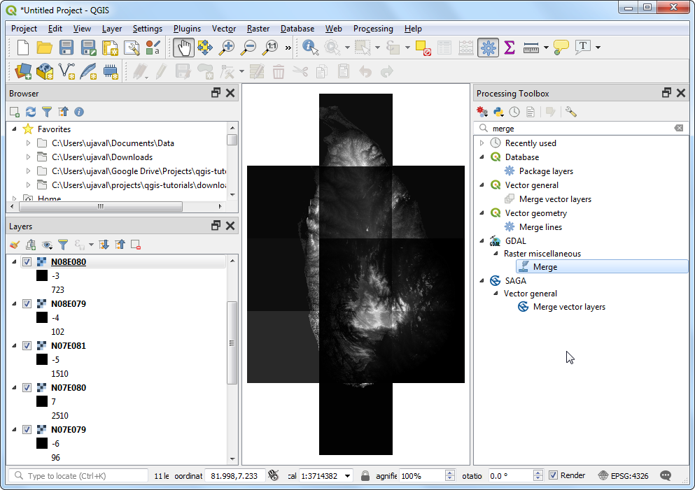
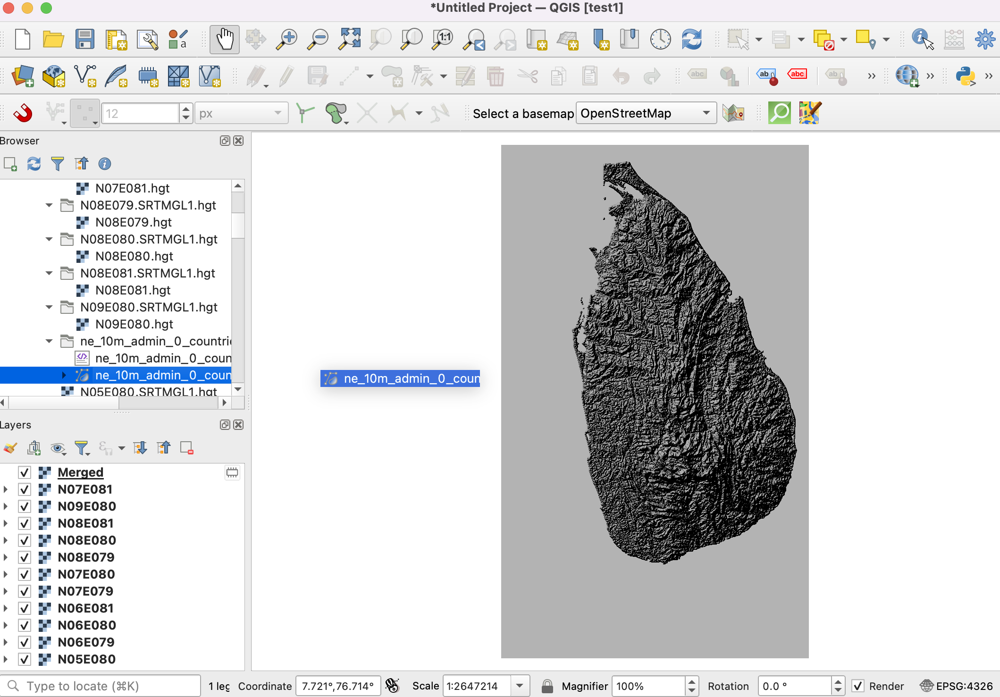

Ujaval Gandhi
Ujaval GandhiRastersko mozaičko kreiranje i isecanje (QGIS3)¶
Ovaj tutorijal istražuje osnovne tehnike rada sa rasterima u QGIS-u, kao što su mozaikiranje i podešavanje.
Pregled zadatka¶
Preuzećemo podatke o nadmorskoj visini za Šri Lanku u obliku SRTM pločica, spojiti ih i rezultujući mozaik iseći na granicu države.
Druge veštine koje ćete naučiti¶
Korišćenje Hillshade renderera za vizuelizaciju podataka o nadmorskoj visini.
Dobijte podatke¶
Centar za distribuiranu aktivnu arhivu kopnenih procesa (LP DAAC) pruža skup podataka „NASA Shuttle Radar Topography Mission (SRTM) Global 1 lučna sekunda <https://lpdaac.usgs.gov/products/srtmgl1v003/>“ kao pločice elevacije.
Jednostavan interfejs za preuzimanje pločica za dato područje je 30-Meter SRTM Tile Downloader autora Dereka Votkinsa. Preuzmite pojedinačne SRTM pločice koje pokrivaju Šri Lanku. Imajte na umu da će vam biti potreban besplatan Earth Data nalog da biste preuzeli podatke.

Takođe će nam biti potreban shapefile Admin 0 - Countries iz programa Natural Earth.
Radi lakšeg snalaženja, možete direktno preuzeti kopiju skupova podataka sa donjih linkova:
Izvor podataka [SRTM] , [NATURALEARTH]
Procedura¶
Otvorite QGIS i pronađite preuzete datoteke u panelu Browser. Proširite pojedinačne zip datoteke da biste prikazali
.hgtdatoteke. Držite pritisnut taster Ctrl i izaberite sve pojedinačne datoteke. Kada ih izaberete, prevucite ih na platno.
Videćete 11 pojedinačnih slojeva učitanih u panelu Slojevi i prikazanih na platnu. Spojićemo ove pojedinačne pločice u jedan mozaik. Idite na .

Pretražite i pronađite alatku . Kliknite dvaput da biste je pokrenuli.

U dijalogu Spajanje kliknite na dugme … pored Unesi slojeve. Kliknite na Izaberi sve da biste izabrali sve pojedinačne slojeve.

Kao što je pomenuto u detaljima sloja skupa podataka, tip ulaznih podataka je 16-bitni označeni ceo broj. Da bismo održali integritet podataka, trebalo bi da zadržimo isti tip podataka za spojeni sloj. Izaberite
Int16kao Izlazni tip podataka. Takođe, podrazumevani format izlaznih podataka je GeoTiff. GeoTiff datoteke mogu postati veoma velike ako se ne kompresuju. IzaberiteVisoka kompresijakao Profil. Kliknite na Pokreni.

Kada se obrada završi, novi sloj „Spojen“ biće dodat na panel Slojevi. Ukoliko sloj nije na vrhu steka, izaberite ga i prevucite na vrh panela Slojevi.

Videćete da sloj „Spojeno“ sadrži spojene podatke o visini iz pojedinačnih ulaznih pločica. Podrazumevana vizuelizacija prikazuje samo vrednosti piksela u opsegu od 0-255. Ali naši podaci sadrže piksele sa vrednostima od -14 do 2371, što rezultira renderovanjem sa niskim kontrastom. Hajde da to promenimo u bolju vizuelizaciju. Kliknite na dugme Otvori panel za stilizovanje sloja u panelu Slojevi.

U panelu Stilizovanje sloja, kliknite na padajući meni Tip renderovanja i izaberite renderer
Hilsejd. Ova opcija renderovanja je posebno pogodna za podatke o nadmorskoj visini.

Još jedna uobičajena operacija pri radu sa rasterima je isecanje rastera na područje koje vas zanima. U ovom tutorijalu, iseckaćemo spojeni sloj na granicu države Šri Lanka. Pronađite preuzetu datoteku
ne_10m_admin_0_countries.zipi proširite je. Prevucite datotekune_10m_admin_0_countries.shpna platno.

Izaberite novododate slojeve „ne_10m_admin_0_countries“ u panelu „Slojevi“. Kliknite na dugme „Izaberite obeležja po oblasti ili jednim klikom“ na traci sa alatkama „Atributi“. Kada ih izaberete, kliknite na poligon za Šri Lanku da biste ga izabrali.

Zadržite selekciju kakva jeste i otvorite . Potražite i pronađite alatku . Dvaput kliknite da biste je pokrenuli.

U dijalogu Iseci raster pomoću maskiranog sloja, podesite
Spojenokao Ulazni sloj. Izaberitene_10m_admin_0_countrieskao Maskiraj sloj i označite polje za potvrdu Samo odabrane karakteristike. Unesite0.0000kao Dodeli određenu vrednost nodata izlaznim opsezima. Kao i ranije, izaberiteVisoka kompresijakao Profil. Kliknite na Pokreni.

Novi sloj „Odsečen (maska)“ biće dodat na panel Slojevi. U ovom trenutku može biti teško videti rezultat jer imamo previše preklapajućih slojeva. Kliknite na dugme Upravljaj temama mape na panelu Slojevi i izaberite
Sakrij sve slojeve.

Uključite samo poslednji sloj „Odsečeno (maska)“ i stilizujte ga pomoću renderera „Hilshade“ kao što je prethodno urađeno.

Spojeni i podskupljeni izlazni sloj elevacije za Šri Lanku je spreman.

If you want to give feedback or share your experience with this tutorial, please comment below. (requires GitHub account)